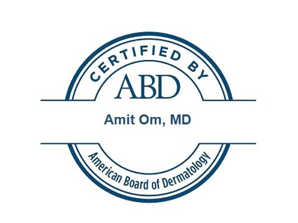
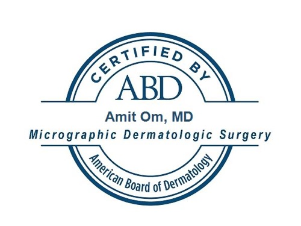
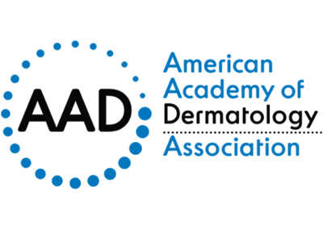
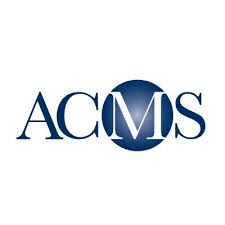
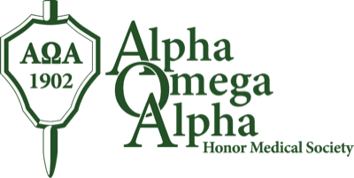

A surgeon's precision. A physician's bedside manner.
Dr. Amit Om is a board-certified dermatologist and fellowship-trained Mohs micrographic surgeon. His training culminated in an ACGME micrographic surgery and dermatologic oncology fellowship under one of the world's foremost Mohs surgeons in Los Angeles.
For Dr. Om, success isn't just a clear margin — it's a patient who feels heard, understands their diagnosis, and is confident in how they look when it's over.

The long road to Mohs
Micrographic surgery is one of medicine's most selective paths: four years of medical school, internship, dermatology residency, then a competitive ACGME fellowship.
-
Undergraduate
Virginia Commonwealth University
Richmond, VA
-
Medical School
Medical University of South Carolina
Charleston, SC
-
Dermatology Residency
Florida State University
Tallahassee, FL
-
Mohs Surgery Fellowship
ACGME Micrographic Surgery & Dermatologic Oncology
Los Angeles, CA — trained under one of the world's foremost Mohs surgeons
Double board-certified
Certified by the American Board of Dermatology in both Dermatology and Micrographic Dermatologic Surgery.


Advancing the field, not just practicing it
Dr. Om's research spans dermatologic surgery and cutaneous oncology, with 23 peer-reviewed publications, a book chapter, and 9 poster presentations.
Memberships



See Dr. Om in Charlotte
Book a skin check, a surgical consultation, or a second opinion at either location.
Book an appointment